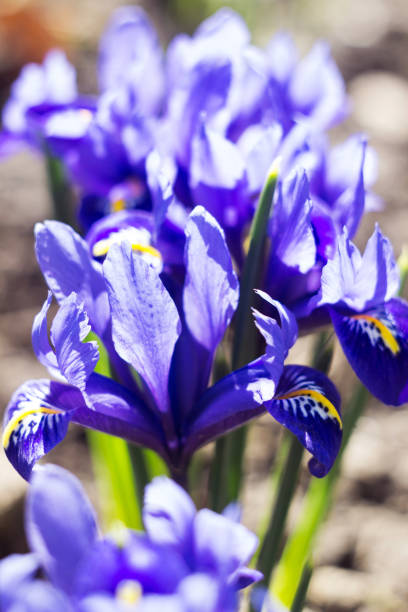

BULBS

 Tulips are a genus of spring-blooming perennial herbaceous bulbiferous geophytes (having bulbs as storage organs). The flowers are usually large, showy and brightly coloured, generally red, pink, yellow, or white (usually in warm colours). They often have a different coloured blotch at the base of the tepals (petals and sepals, collectively), internally. Because of a degree of variability within the populations, and a long history of cultivation, classification has been complex and controversial. The tulip is a member of the lily family, Liliaceae, along with 14 other genera, where it is most closely related to Amana, Erythronium and Gagea in the tribe Lilieae.
There are about 75 species, and these are divided among four subgenera. The name "tulip" is thought to be derived from a Persian word for turban, which it may have been thought to resemble by those who discovered it. Tulips originally were found in a band stretching from Southern Europe to Central Asia, but since the seventeenth century have become widely naturalised and cultivated (see map). In their natural state they are adapted to steppes and mountainous areas with temperate climates. Flowering in the spring, they become dormant in the summer once the flowers and leaves die back, emerging above ground as a shoot from the underground bulb in early spring.
Tulips are a genus of spring-blooming perennial herbaceous bulbiferous geophytes (having bulbs as storage organs). The flowers are usually large, showy and brightly coloured, generally red, pink, yellow, or white (usually in warm colours). They often have a different coloured blotch at the base of the tepals (petals and sepals, collectively), internally. Because of a degree of variability within the populations, and a long history of cultivation, classification has been complex and controversial. The tulip is a member of the lily family, Liliaceae, along with 14 other genera, where it is most closely related to Amana, Erythronium and Gagea in the tribe Lilieae.
There are about 75 species, and these are divided among four subgenera. The name "tulip" is thought to be derived from a Persian word for turban, which it may have been thought to resemble by those who discovered it. Tulips originally were found in a band stretching from Southern Europe to Central Asia, but since the seventeenth century have become widely naturalised and cultivated (see map). In their natural state they are adapted to steppes and mountainous areas with temperate climates. Flowering in the spring, they become dormant in the summer once the flowers and leaves die back, emerging above ground as a shoot from the underground bulb in early spring.
 Iris reticulatais a species of flowering plant in the family Iridaceae. It is native from eastern Turkey to Iran,[3] but cultivated widely in temperate regions. The reticulata group of irises is characterised by a fibrous net surrounding the bulb. They are small plants to 15 centimetres (5.9 in), with tubular, sharply-pointed, ribbed leaves, and flowers of yellow, blue or purple with an orange blaze on the falls, appearing in early spring. They are hardy, but prefer a well-drained sunny position in soil which dries out in summer; they are therefore suitable for a rock or gravel garden.[4]Iris reticulata grows wild in the cold and dry mountains of Turkey, Iraq, Iran and Russia. The bulbs need a consistent supply of moisture during the spring, but should stay quite dry during summer, autumn and winter. They are likely to rot in heavy or wet soil. Rock gardens and gravel gardens are ideal planting locations for these bulbs. Also consider fast-draining areas beside a front walk or stone patio. Another option is to grow the bulbs in an elevated alpine trough or in pots.
 Fritillaria meleagrisis one of about 100 species in the genus Fritillaria, a group of herbaceous bulbs in the lily family (Lilaceae). The name meleagris means “spotted like a guinea fowl”. With common names including guinea hen flower (the pattern on the flowers resembles the patterning on guinea hens), leper lily (because the flower shape resembles the warning bell once carried by lepers), chess flower, frog-cup, chequered lily, and snake’s head fritillary, this species is rarely found in the wild but is commonly grown as an ornamental in gardens. Native to grassy flood plains and meadows of Europe from southern England to Russia, these bulbs are hardy in zones 3-8. They are one of the less commonly grown small spring bulbs but have been cultivated for centuries – it was a regular feature in Elizabethan gardens, dating back to at least 1572.
Fritillaria meleagrisis one of about 100 species in the genus Fritillaria, a group of herbaceous bulbs in the lily family (Lilaceae). The name meleagris means “spotted like a guinea fowl”. With common names including guinea hen flower (the pattern on the flowers resembles the patterning on guinea hens), leper lily (because the flower shape resembles the warning bell once carried by lepers), chess flower, frog-cup, chequered lily, and snake’s head fritillary, this species is rarely found in the wild but is commonly grown as an ornamental in gardens. Native to grassy flood plains and meadows of Europe from southern England to Russia, these bulbs are hardy in zones 3-8. They are one of the less commonly grown small spring bulbs but have been cultivated for centuries – it was a regular feature in Elizabethan gardens, dating back to at least 1572.